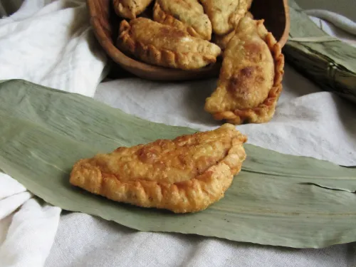

Dothraki Blood Pie

Description
Rustic and hearty, frying leaves the dough wonderfully chewy, and the insides bursting with flavor. If you are wary of the blood sausage, you needn’t be; One of our housemates ate four of the pies in quick succession, raving about them, and was shocked to learn that they contained black pudding. The spices further improve what would be a wonderful recipe on its own. I used Aleppo pepper, and loved the middle eastern spiciness of it. If you too add spicy pepper to your filling, then you may find that our Milk Tea is a wonderful counter to that heat.
Dough Ingredients
- 2 1/4 cups all-purpose flour
- 1/2 teaspoon salt
- 3/4 cup warm water
Filling Ingredients
- 2 garlic cloves, minced
- 1 small onion, minced
- 1/2 pound ground lamb
- 1/2 lb. blood sausage
- Spices to taste (I used 1 tsp. Aleppo Pepper, and 1 tsp. cumin)
- several cups vegetable oil for frying
Steps
- Mix the ingredients for the dough, tweaking the amounts of flour and water as needed until you have a nice smooth ball of dough.
- Divide the dough in half, and roll each half into a rope about a foot long. Cut these ropes into 5-6 pieces, which will give you a total of 10-12. On a floured surface, roll out each piece of dough into a thin circle, about 5-7″ across.
- Onto each of the dough discs, spoon 3-4 Tbs. of the filling, then spread it out, leaving only 1/2″ border uncovered. Crimping the edges together is a bit tricky; With your fingers, tuck the first inch or so of the dough near the fold under the meat pie. Then, one bit of dough at a time, fold the joined edges over the top, overlapping as you go.
- Repeat with all remaining dough and filling. Meanwhile, heat about 2 inches oil over medium-low heat to 350°F in a deep pot. Fry pies, several at a time, until golden and meat is just cooked through, about 5 minutes. Transfer to paper towels to drain.
- Serve warm or cold.